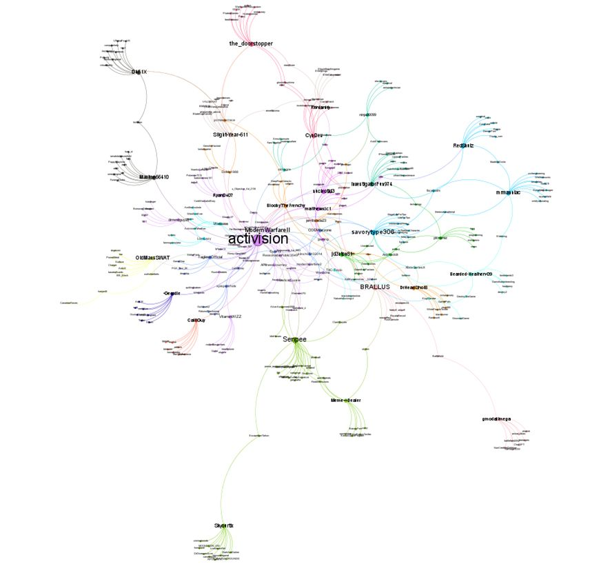
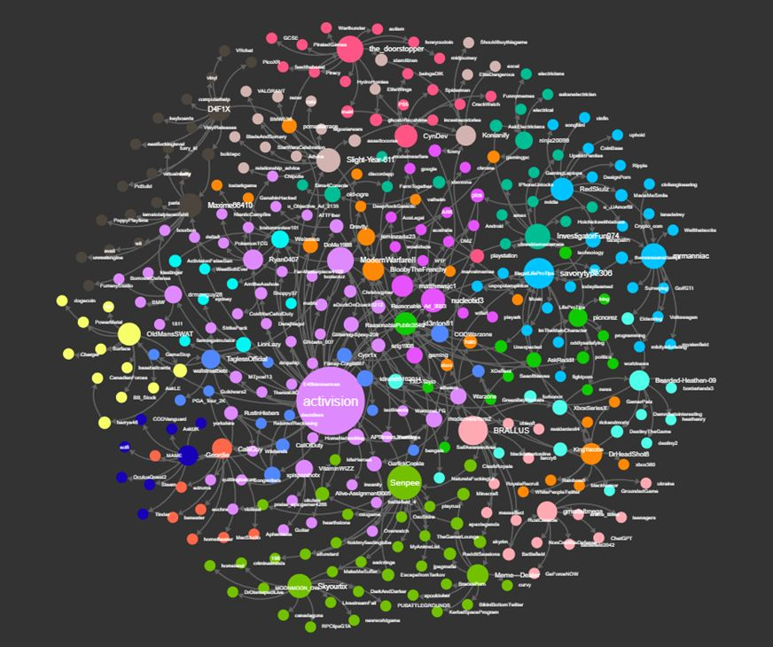

Project Details
Identifying Toxic Behaviour in Reddit gaming communities! 🎮
Project Description
Throughout my research journey, I explored the complex world of online communities and delved into the challenges of tackling toxic behavior. Here's a sneak peek into my dissertation, where I addressed the problem of toxicity in Reddit gaming communities and developed innovative solutions using Python, #nlp #machinelearning Gephi and Polinode.
🎯 Problem Statement:
The rise of online gaming communities has brought both joy and challenges. However, one significant challenge is the prevalence of toxic behavior that can negatively impact the gaming experience. My dissertation aimed to identify and understand this toxic behavior, ultimately leading to the development of effective strategies for fostering healthier and more inclusive gaming communities.
🔍 Data Collection
To tackle this problem, I embarked on an extensive data collection process. I gathered vast amounts of Reddit posts and comments from Activision Subreddit, creating a comprehensive dataset that allowed me to capture the diverse interactions and behaviors.
📉 Identifying Negative Content and Users
Using the power of Python, I employed sophisticated techniques to analyze the collected data and identify negative content and toxic users. I leveraged natural language processing (NLP) algorithms and machine learning models to distinguish toxic behavior, such as hate speech, harassment, and disrespectful language, from regular interactions.
📊 Sentiment Analysis
In order to gain deeper insights into the emotional undercurrents of the gaming communities, I conducted sentiment analysis on the collected data. By employing sentiment analysis algorithms, I was able to discern the prevailing sentiments within the community, ranging from positive and neutral to negative emotions, shedding light on the overall tone and atmosphere of these communities.
📈 Building a Predictive Model
One of the highlights of my research was the development of a predictive model using Python. By integrating the insights obtained from the previous stages, I created a robust model capable of predicting the likelihood of toxic behavior within Reddit gaming communities.
1️⃣ Overall Sentiment Score Network Map
Analyzed a vast amount of data and constructed a comprehensive sentiment score network map. It reveals the interconnectedness of sentiments expressed across various topics and provides a holistic view of public opinion. The map showcases the intricate relationships between positive, negative, and neutral sentiments, giving me valuable insights into the underlying sentiment landscape.
2️⃣ Grouping Comments Based on Sentiment Score
To further enhance my analysis, I segmented comments based on sentiment scores. This allowed me to categorize comments as positive, negative, or neutral. By understanding the distribution and intensity of sentiments, I can gain a deeper understanding of the sentiments expressed by users, enabling me to address specific areas for improvement or commendation.
3️⃣ Posting Activity by Hour of the Day
Examined the posting activity of my top 50 positive users and top 50 negative users across different hours of the day. This analysis offers valuable insights into the temporal patterns of posting behavior. By understanding when users are most active and when positive or negative sentiments are prevalent, I can tailor my engagement strategies to effectively target and engage with my audience.
4️⃣ Sentiment Score Trends of Posts for Top 50 Positive and Negative Users Over Time
Tracked the sentiment score trends of my top 50 positive and negative users over a specified period. By analyzing the temporal dynamics, I can identify shifts in sentiment patterns, track the impact of certain events, and assess the overall sentiment trajectory of influential users. These insights empower me to adapt my strategies and cultivate a positive online environment while addressing potential issues head-on.

Network Analysis
1️⃣ Network Map of Negative Users
By closely examining the sentiment data, I constructed a network map specifically focusing on negative users. This map unveils the connections and interactions between individuals expressing negative sentiments, shedding light on influential users and potential clusters. Understanding the network dynamics of negative sentiment can help me identify areas for intervention and address concerns promptly and effectively.

2️⃣ Network Map of Positive Users
In parallel to the negative sentiment network map, I also built a network map dedicated to positive users. This map uncovers the relationships and conversations among individuals who consistently express positive sentiments. By studying the positive sentiment network, I gain insights into the key influencers, supportive communities, and content that resonates with positivity. This knowledge empowers me to nurture a culture of optimism and enhance user experiences.

3️⃣ Network Map Visualizations using Gephi
To bring these network maps to life, I utilized the powerful visualization tool, Gephi. These visualizations enable me to perceive the intricate connections between users, identify clusters, and detect central nodes. Through interactive exploration, I can better comprehend the sentiment landscape and devise strategies that foster positive engagement.
4️⃣ Network Map Visualizations using Polinode
In addition to Gephi, I also employed Polinode to visualize my sentiment networks. Polinode provides a user-friendly interface and intuitive visualizations that enhance my understanding of the sentiment patterns. With its advanced features, I can easily identify influential users, analyze sentiment flows, and delve deeper into the dynamics of positive and negative sentiment networks.
